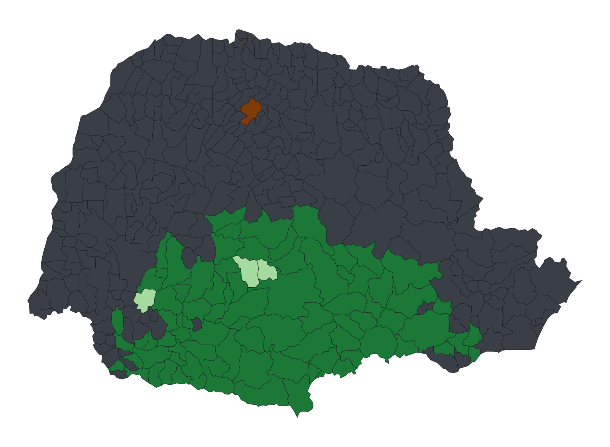

775,959 tonnes. That was Paraná's yerba mate harvest in 2024, more than double the next state and 85.8% of everything Brazil still picks in native forest. Read from the endpoints, the series looks like a transition from forest to field. Read year by year it says the opposite: the forest led in 18 of the 20 years to 2023. This study puts four econometric tests on 30 years of IBGE data and the open company registry, and keeps the correction it had to make along the way. 775.959 toneladas. Foi a colheita de erva-mate do Paraná em 2024, mais que o dobro do segundo estado e 85,8% de tudo que o Brasil ainda colhe em floresta nativa. Lida pelas duas pontas, a série parece uma transição da floresta para a lavoura. Lida ano a ano, diz o contrário: a floresta liderou em 18 dos 20 anos até 2023. Este estudo aplica quatro testes econométricos a 30 anos de dados do IBGE e ao cadastro CNPJ aberto, e mantém à vista a correção que precisou fazer no caminho. 775.959 toneladas. Esa fue la cosecha de yerba mate de Paraná en 2024, más del doble que el segundo estado y el 85,8% de todo lo que Brasil todavía recoge en bosque nativo. Leída por los extremos, la serie parece una transición del bosque al cultivo. Leída año a año dice lo contrario: el bosque lideró en 18 de los 20 años hasta 2023. Este estudio aplica cuatro pruebas econométricas a 30 años de datos del IBGE y al registro abierto de empresas, y deja a la vista la corrección que tuvo que hacer en el camino.
A reproducible econometric study of Paraná's yerba mate chain, the largest in Brazil. The production series come from two IBGE surveys published separately: PAM, which records cultivated stands, and PEVS, which records leaf still picked from trees standing in native araucaria forest. Values are deflated by the IPCA index to 2024 reais. The industrial side comes from the Federal Revenue's open CNPJ registry (2026-07 release), filtered to 228 establishments whose primary activity is yerba mate processing and whose registration is active, all geocoded.
The study asks four questions of the 775,959-tonne headline: does supply respond to price, are native and cultivated leaf one market or two, where exactly does the chain sit on the map, and does industry follow the raw material. It also documents a correction: the first draft read the series from its endpoints and claimed cultivation overtook the forest in 1998 and kept the lead. The year-by-year series contradicts that, and the report says so.
The full analysis is a trilingual interactive report with its own charts drawn from the pipeline data: the year-by-year lead, area versus yield, the two price series and their 2012 convergence, the LISA belt, and the mill-location scatter. This page is the summary; the button above opens the report.
Production from SIDRA tables 1613 (PAM) and 289 (PEVS); deflator from table 1737 (annual mean of the IPCA index, 2024 = 1); municipal cut for 2024 on IBGE's official 2024 mesh. Nerlove by OLS with HAC (Newey-West) errors; ADF and Engle-Granger on log prices; Moran's I and LISA implemented from scratch in numpy with conditional permutation inference and queen contiguity; Poisson QMLE with HC1 errors and an OLS robustness check in statsmodels. The pipeline runs in six Python scripts with cached downloads and 49 sanity checks that lock every published number to the generated statistics, including one that fails if the retracted 1998 sentence reappears.
Limits, stated where they bite: the 2024 return of cultivation to the lead is one observation; the implicit price is a state average of declared value and not comparable with DERAL's weekly farm-gate quotation; the Nerlove model rules out a strong response without estimating the true elasticity; an active CNPJ registration is not an operating plant; and LISA on log(1 + output) with 266 municipalities at zero is robust in the belt and soft at its edges.

The trilingual interactive report carries the full story with its own charts: the year-by-year lead, area and yield, the price convergence, the LISA belt and the mill-location model, plus the method, the limits and the revision note.
Um estudo econométrico reprodutível da cadeia da erva-mate do Paraná, a maior do Brasil. As séries de produção vêm de duas pesquisas do IBGE publicadas em separado: a PAM, que registra os ervais plantados, e a PEVS, que registra a folha ainda colhida de árvores em pé na floresta com araucária. Os valores são deflacionados pelo IPCA para reais de 2024. O lado industrial vem dos Dados Abertos do CNPJ da Receita Federal (carga 2026-07), filtrados a 228 estabelecimentos com atividade principal de processamento de erva-mate e situação ativa, todos geocodificados.
O estudo faz quatro perguntas à manchete de 775.959 toneladas: a oferta responde ao preço, folha nativa e cultivada são um mercado ou dois, onde exatamente a cadeia está no mapa, e a indústria segue a matéria-prima. Ele também documenta uma correção: o primeiro rascunho leu a série pelas duas pontas e afirmou que o cultivo ultrapassou a floresta em 1998 e manteve a liderança. A série ano a ano contradiz isso, e o relatório diz isso.
A análise completa é um relatório interativo trilíngue com gráficos próprios desenhados a partir dos dados do pipeline: a liderança ano a ano, área contra rendimento, as duas séries de preço e a convergência de 2012, o cinturão LISA e a dispersão das ervateiras. Esta página é o resumo; o botão acima abre o relatório.
Produção das tabelas 1613 (PAM) e 289 (PEVS) do SIDRA; deflator da tabela 1737 (média anual do IPCA, 2024 = 1); corte municipal de 2024 sobre a malha oficial 2024 do IBGE. Nerlove por MQO com erros HAC (Newey-West); ADF e Engle-Granger nos log-preços; I de Moran e LISA implementados do zero em numpy com inferência por permutação condicional e contiguidade queen; Poisson QMLE com erros HC1 e robustez em MQO no statsmodels. O pipeline roda em seis scripts Python com downloads em cache e 49 checagens de sanidade que travam cada número publicado às estatísticas geradas, incluindo uma que falha se a frase retirada sobre 1998 reaparecer.
Limites, ditos onde doem: a volta do cultivo à liderança em 2024 é uma observação; o preço implícito é média estadual de valor declarado e não é comparável com a cotação semanal de porteira do DERAL; o modelo de Nerlove descarta resposta forte sem estimar a elasticidade verdadeira; CNPJ ativo não é planta operando; e o LISA sobre log(1 + produção), com 266 municípios em zero, é robusto no cinturão e frágil nas bordas.
O relatório interativo trilíngue conta a história completa com gráficos próprios: a liderança ano a ano, área e rendimento, a convergência de preços, o cinturão LISA e o modelo de localização das ervateiras, mais o método, os limites e a nota de revisão.
Un estudio econométrico reproducible de la cadena de la yerba mate de Paraná, la mayor de Brasil. Las series de producción vienen de dos encuestas del IBGE publicadas por separado: la PAM, que registra las plantaciones, y la PEVS, que registra la hoja todavía recogida de árboles en pie en el bosque de araucaria. Los valores se deflactan por el IPCA a reales de 2024. El lado industrial viene de los Datos Abiertos del CNPJ de la Receita Federal (carga 2026-07), filtrados a 228 establecimientos con actividad principal de procesamiento de yerba mate y situación activa, todos geocodificados.
El estudio le hace cuatro preguntas al titular de 775.959 toneladas: si la oferta responde al precio, si la hoja nativa y la cultivada son un mercado o dos, dónde exactamente está la cadena en el mapa, y si la industria sigue a la materia prima. También documenta una corrección: el primer borrador leyó la serie por los extremos y afirmó que el cultivo superó al bosque en 1998 y mantuvo el liderazgo. La serie año a año lo contradice, y el informe lo dice.
El análisis completo es un informe interactivo trilingüe con gráficos propios dibujados a partir de los datos del pipeline: el liderazgo año a año, área contra rendimiento, las dos series de precios y su convergencia de 2012, el cinturón LISA y la dispersión de los molinos. Esta página es el resumen; el botón de arriba abre el informe.
Producción de las tablas 1613 (PAM) y 289 (PEVS) de SIDRA; deflactor de la tabla 1737 (media anual del IPCA, 2024 = 1); corte municipal de 2024 sobre la malla oficial 2024 del IBGE. Nerlove por MCO con errores HAC (Newey-West); ADF y Engle-Granger sobre los log-precios; I de Moran y LISA implementados desde cero en numpy con inferencia por permutación condicional y contigüidad queen; Poisson QMLE con errores HC1 y robustez en MCO en statsmodels. El pipeline corre en seis scripts Python con descargas en caché y 49 verificaciones de sanidad que fijan cada cifra publicada a las estadísticas generadas, incluida una que falla si la frase retirada sobre 1998 reaparece.
Límites, dichos donde duelen: el regreso del cultivo al liderazgo en 2024 es una observación; el precio implícito es un promedio estatal de valor declarado y no es comparable con la cotización semanal a puerta de finca del DERAL; el modelo de Nerlove descarta una respuesta fuerte sin estimar la elasticidad verdadera; un registro CNPJ activo no es una planta operando; y el LISA sobre log(1 + producción), con 266 municipios en cero, es robusto en el cinturón y frágil en los bordes.
El informe interactivo trilingüe lleva la historia completa con sus propios gráficos: el liderazgo año a año, área y rendimiento, la convergencia de precios, el cinturón LISA y el modelo de localización de los molinos, más el método, los límites y la nota de revisión.